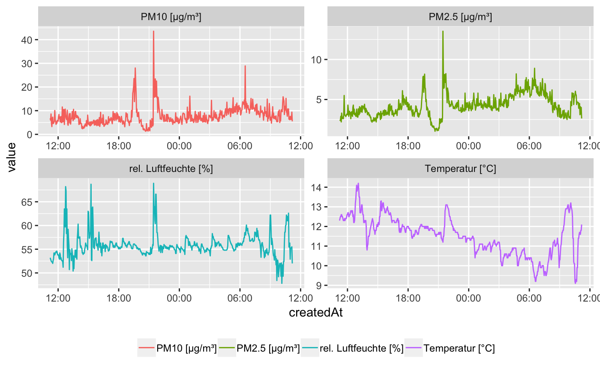

vignettes/Getting_started_with_the_R_package_senseBox.Rmd
Getting_started_with_the_R_package_senseBox.RmdThe senseBox is a do-it-yourself kit for stationary and mobile sensor stations. With senseBox you can make measurements, helping to answer a variety of scientific questions and to support Citizen Science Projects from the local to global scale. Data collected by senseBox can increase the measured density of various enviromental factors and can contribute to more precise statements regarding climate, pollution or traffic.
openSenseMap is the platform for the publishing of senseBox and other open sensor data. Each senseBox transmits its measurements directly to the map, where anyone can observe, analyze and download the data.
This is the point where this R-pacakge comes into play: The R-package senseBox provides access to the senseBox API and enables the user to download, analyse and visualise the data provided by registered senseBoxes.
With pacakges like ggplot2 or plotly R is the perfect tool to visualise data. In the next chapter you find a short introduction to the basic usage of this R-package and some examples how to visualise the data.
First we show a little bit of senseBox statistics with the function get_senseBox_stats(). Then we list all available senseBoxes with their Id and name. We choose an Id from a senseBox which is located in Berlin, Germany.
## Loading required package: httrstats <- get_senseBox_stats()
list <- get_senseBox_Ids()
senseBoxId <- c("592ca4b851d3460011ea2635")| variable | value |
|---|---|
| Number of senseBoxes | 2254 |
| Number of Measurements | 1309458186 |
| Number of measurements in last minute | 2832 |
See where is the box located? We can easily get an overview and map the location. First we extract the coordinates of the senseBox. This can be done with get_senseBox_location(). Note that some extra packages are necessary to display the locations interactively.
location <- get_senseBox_location(senseBoxId)
library(leaflet)
library(htmltools)
leaflet(location) %>%
addProviderTiles(providers$OpenStreetMap) %>%
addTiles() %>%
addMarkers(~long, ~lat, popup = ~htmltools::htmlEscape(name))But now to the main part of the package: downloading and analysing data from senseBoxes.
sensor_info <- get_senseBox_sensor_info(senseBoxId, tidy = T)
knitr::kable(
sensor_info,
format = "html"
)| name | phenomena | unit | sensorIds | sensorType |
|---|---|---|---|---|
| Leipziger65-Süd | PM10 | µg/m³ | 592ca4b851d3460011ea2636 | SDS 011 |
| Leipziger65-Süd | PM2.5 | µg/m³ | 592ca4b851d3460011ea2637 | SDS 011 |
| Leipziger65-Süd | Temperatur | °C | 592ca4b851d3460011ea2638 | DHT22 |
| Leipziger65-Süd | rel. Luftfeuchte | % | 592ca4b851d3460011ea2639 | DHT22 |
We can now download data from the senseBox, either from a specific sensorId or from all sensors within the sensBox. In the following we are downloading all available sensors.
When you are interested in just a selection of sensors, just submit the sensorIds to the function get_senseBox_data().
sensor_ids <- get_senseBox_sensor_Ids(senseBoxId)
data_sel <- get_senseBox_data(senseBoxId,
sensorId = sensor_ids$sensorIds)When using the above code, by defatult, the data from the last 48 h will be downloaded. You can donwload up to 10,000 records and sepcify the date of the record. The maximum time frame for downloading data is back to one month from now. Use the argument fromDate and toDate to specify the desired time frame.
data_timeframe <- get_senseBox_data(senseBoxId,
fromDate = "2017-11-11 11:11:11",
toDate = "2017-11-12 11:11:11")Visualising the results from all sensors is one of the main aims and we recommend using the R-package ggplot2. We provide a sample code next and you just have to change the data executed in the function melt().
library(ggplot2)
library(reshape2)
library(scales)
data_melt <- melt(data_timeframe, id.vars = c("createdAt", "value"))
ggplot(data_melt, aes(x = createdAt, y = value, colour = L2)) +
geom_line() +
scale_x_datetime(labels = date_format("%H:%M", tz = Sys.timezone())) +
facet_wrap(~L2, scales = "free") +
theme(legend.position = "bottom",
legend.title = element_blank())